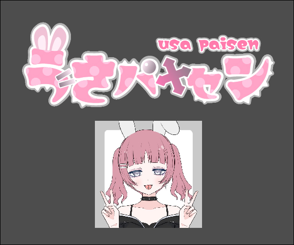

Logo ロゴ制作
今までに制作した架空の商業用のロゴです。
それぞれの作品について紹介します。
About
架空のVtuber「天使くるる」さんのロゴです。
トレードマークの天使の羽と輪とキャンディーを大きく配置しました。
パステルカラーでまとめ、空に浮かぶふわふわな雲やきらめく星などをイメージして制作しました。
使用素材：picrew ♦絢瀬 様
Period
2024 約5時間

About
架空のVtuber「うさパイセン」さんのロゴです。
シルバーのアクセサリーを全体に配置しました。
イメージカラーのピンクを使用していますが、文字のところどころに棘をつけ、可愛いすぎず辛めのデザインになるよう心掛けました。
使用素材：picrew くろまと 様
Period
2024 約4時間(NEW!)